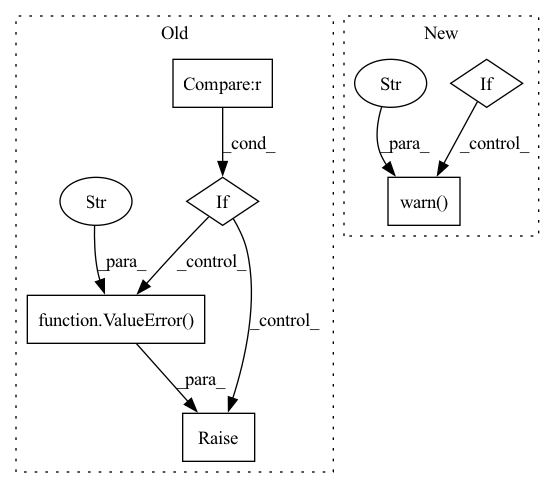

Pattern ID :27503
Before Change def validate_cfg(cfg):
data_cfg = cfg.data
if (data_cfg.dataset is None) == (data_cfg.dataset_file is None) :
raise ValueError(
f"You should provide either data.dataset or data.dataset_file but not both. "
f"Got {data_cfg.dataset} for data.dataset and {data_cfg.dataset_file} for data.dataset_file."
)
After Change
dataset = getattr(data_cfg, "dataset", None)
dataset_file = getattr(data_cfg, "dataset_file", None)
if dataset is None and dataset_file is None:
raise ValueError("You should provide either data.dataset or data.dataset_file")
elif dataset is not None and dataset_file is not None:
warnings.warn(f"Using value {dataset_file} from `dataset_file` to load a dataset" , RuntimeWarning)
In pattern: SUPERPATTERN
Frequency: 3
Non-data size: 6
Instances Fragment ID: 81606988
Project Name: albumentations-team/autoalbument
Commit Name: 784fb71ab4ef66ad054f84d61eca15593344ffe0
Time: 2021-02-21
Author: creafz@gmail.com
File Name: autoalbument/config/validation.py
M Class Name: AnonimousClass
N Class Name: AnonimousClass
M Method Name: validate_cfg(1)
N Method Name: validate_cfg(1)
M Parent Class:
N Parent Class:
M File Name: autoalbument/config/validation.py
N File Name: autoalbument/config/validation.py
M Start Line: 2
M End Line: 7
N Start Line: 5
N End Line: 12
Before Change
def predict(self, X_test, freq=None):
if self._model is not None:
if isinstance(X_test, int) and freq is not None :
future = self._model.make_future_dataframe(periods=X_test, freq=freq)
forecast = self._model.predict(future)
elif isinstance(X_test, pd.DataFrame):
forecast = self._model.predict(X_test)
else:
raise ValueError(
"either X_test(pd.Dataframe with dates for predictions, column ds) or"
"X_test(int number of periods)+freq are required." )
return forecast["yhat"]
else:
return np.ones(X_test.shape[0])
After Change
return train_time
def predict(self, X_test):
if isinstance(X_test, int):
raise ValueError(
"predict() with steps is only supported for arima/sarimax."
" For FBProphet, pass a dataframe with a date colum named ds.")
if self._model is not None:
forecast = self._model.predict(X_test)
return forecast["yhat"]
else:
warnings.warn(
"Estimator is not fit yet. Please run fit() before predict()." )
return np.ones(X_test.shape[0])
Fragment ID: 81606974
Project Name: microsoft/flaml
Commit Name: 6ab0730793f42ff5bb7f53b3a9d43d640e597189
Time: 2021-09-01
Author: wang.chi@microsoft.com
File Name: flaml/model.py
M Class Name: FBProphet
N Class Name: FBProphet
M Method Name: predict(2)
N Method Name: predict(3)
M Parent Class: BaseEstimator
N Parent Class: BaseEstimator
M File Name: flaml/model.py
N File Name: flaml/model.py
M Start Line: 886
M End Line: 897
N Start Line: 915
N End Line: 924
Before Change
n_uniques = hyper_df.nunique()
sub_dfs = []
sub_scores = []
if dimensions > 4 :
raise ValueError("plot not implemented for more than 4 hyperparameters" )
elif dimensions == 4:
fig, axs = plt.subplots(n_uniques[-2], n_uniques[-1], subplot_kw={"projection": "3d"})
unique_x = hyper_df[hyper_df.columns[-2]].unique()
unique_y = hyper_df[hyper_df.columns[-1]].unique()After Change
n_uniques = [cv_results_[col].nunique() for col in param_cols]
sub_dfs = []
sub_scores = []
if n_params > 4:
warnings.warn("plot not implemented for more than 4 hyperparameters. Plotting for first 4" )
param_cols = param_cols[:4]
n_uniques = n_uniques[:4]
if n_params > 3:
fig, axs = plt.subplots(n_uniques[-2], n_uniques[-1], subplot_kw={"projection": "3d"}) Fragment ID: 81606990
Project Name: jameschapman19/cca_zoo
Commit Name: 4e44f20e5f5632710a52316bf27e6320ac1c3abe
Time: 2021-09-24
Author: james.chapman.19@ucl.ac.uk
File Name: cca_zoo/utils/plotting.py
M Class Name: AnonimousClass
N Class Name: AnonimousClass
M Method Name: cv_plot(1)
N Method Name: cv_plot(1)
M Parent Class:
N Parent Class:
M File Name: cca_zoo/utils/plotting.py
N File Name: cca_zoo/utils/plotting.py
M Start Line: 19
M End Line: 63
N Start Line: 16
N End Line: 58